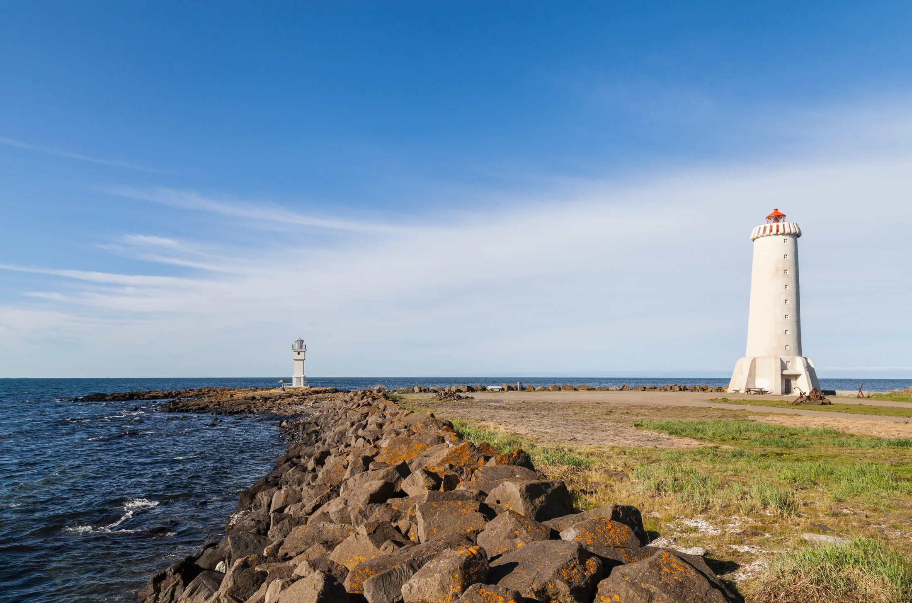

Kaupsamningar og afsöl
Gerð og yfirferð kaupsamninga og afsalsgerninga.
Ég aðstoða við skjalagerð og samninga, hvort sem um er að ræða kaupsamninga, afsalsgerninga eða eitthvað annað.
Þjónustan
Gerð og yfirferð kaupsamninga og afsalsgerninga.
Gerð og yfirferð samninga milli fyrirtækja, milli einstaklinga eða milli einstaklinga og fyrirtækja.
Farið yfir skjöl og skilmála áður en skrifað er undir og bent á atriði sem vert er að breyta.
Algengar spurningar
Áður en þú samþykkir samninginn. Þá get ég farið yfir skilmálana með þér og lagt til breytingar áður en þú skuldbindur þig.
Afsal er skjal sem staðfestir að eignarréttur að fasteign flytjist frá seljanda til kaupanda. Afsal er þinglýst hjá sýslumanni.
Almennt gildir samningafrelsi og samningur getur verið munnlegur. Skriflegur samningur auðveldar þó sönnun um efni hans og er í sumum tilvikum áskilinn samkvæmt lögum.

Lögfræðiþjónusta á Akranesi frá 2011
Hafa samband
Hringdu eða sendu fyrirspurn. Fyrirspurn felur ekki í sér að ég hafi tekið málið að mér.